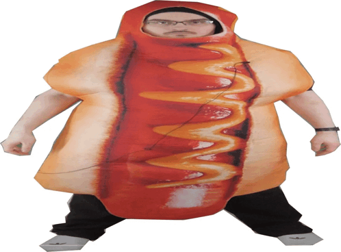

Sausage

Description
Wondering how to cook sausage? Fresh sausage is easy to cook - you
can grill them, bake them in the oven, or cook them in a skillet on
the stove top. Here we describe the grill method in detail so your
sausages will turn out perfectly.
Ingredients
-
1 pound fresh sausage links (such as bratwurst, Italian sausage,
or kielbasa)
Steps
-
Preheat a gas grill to medium-high (400 degrees F to 450 degrees
F (200 degrees C to 230 degrees C)) on 1 side, or push hot coals
to 1 side of a charcoal grill. Place sausage links on the oiled
grates over the unlit side of grill.
-
Cover and grill until a thermometer inserted into thickest
portion of sausage registers 150 degrees F (66 degrees C), 8 to
10 minutes, turning halfway through cook time.
-
Move sausage to the lit side of grill; grill, uncovered, turning
once halfway through, until browned and a thermometer inserted
into thickest portion of sausage registers 160 degrees F (71
degrees C), 1 to 2 minutes. Serve as desired.
- Enjoy!